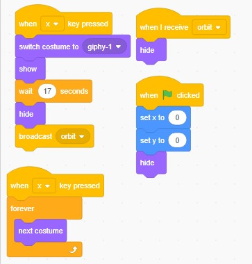

https://scratch.mit.edu/projects/258978061/
This game was inspired by Destiny, the original open world shooter game. Our game is a game where you travel to other planets and hunt down enimies. For the shooting aspect of the game. We implemented a shoot and score system. It consits that when you shoot an enemy you gain points. You can die by having the enemies shoot at you a select number of times. The randomness occurs on our market encoders plaza. For every "open" the user clicks a random item will be given to the player/user. We madet the game because we had an interest in the game as we had put hours in the original game. We just had to recreate an aspect of it somehow. The two successful parts in our project was the smooth animations of the sprites thorughout the game and our fluid design scheme. The two obatcles we had faced was making everything work the way it should smotthly such as animations and our timing of each sprite. If we had more time, we would make the game more fluid in timing as well as extra features on our game. One of the extra features would be more enemy variations on more planets as we only had two.
The batch of scripts here, are the most significant as the make our first animations more fluently with one sprite and 420 animation frames!
One Chance is a story where you only have one chance in 7 days to save mankind from a biological disaster. As the days come closer, you have to make crictical choices. Each choice has a concequence, so chose wisely.

During the development of our program, we had many ups and downs in our code as well as our minds. One of them was getting the complicated events to play out correctly. There were too many choices and sometimes one choice would trigger two choices at once. We were able to fix this by making our varibles more specific and neat so that when a user enters a letter, indicating a choice, the python program wouldn't be confused on what options comes next. Another problem wasthe indentation glitch on replit, it was a tedious process that was done man times, messing us up a lot, we fixed it by re-indenting, doing this multiple times makes it iterative considered procedural abstraction because the instead of writing the code out over and over.This problem that we had had occured with our peers as well. By organizing our scenes, abstraction was expressed by hiding all the code in function within functions. So while the code is being executed, it ignores the code and follows the functions. The two stories I enjoyed were "The Journey to Pynsthena, it was by far most well made with lots of mathematics, and "Twinkie Reflection" was pretty great because of its interesting story line with many unexpected plot twists. It certainly adds a bounus point to the definition of abstraction.